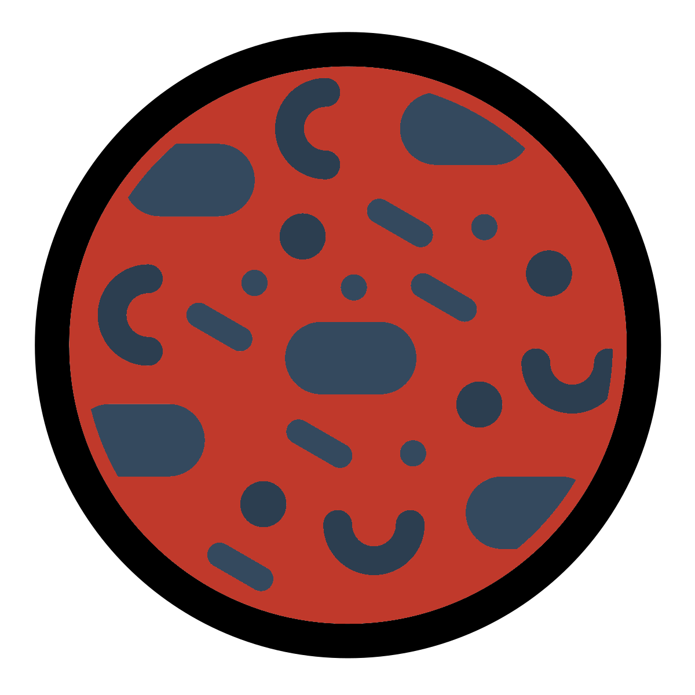

Chapter 1 Dataset & workflow
1.1 Dataset

In this tutorial we will be using a 16S metabarcoding dataset derived from surface water from the Durance River in the south-east of France. Two major comparisons were carried out in combination with each other.
1.1.1 Sites

Three different sites were chosen on the Durance River. These three sites were representative of an anthropisation (transformation of land by humans) gradient along a river stream. These sites were:
- Upper Durance sampling site (UD): Alpine part of the river with little/no anthropisation.
- Middle Durance sampling site (MD): Upper part of agricultural land dominated by apple and pear production.
- Lower Durance sampling site (LD): Lower part of agricultural land with intensive production of fruits, cereals, and vegetables.
1.1.2 Culture media

Surface water was sampled and different culture media were used to produce bacterial lawns for each site. The media used were:
- Environmental sample (ENV): No media used, frozen at -20°C.
- TSA 10% incubated at 28°C for 2 days.
- KBC incubated at 28°C for 2 days.
- CVP incubated at 28°C for 3 days.
1.1.3 Summary & questions

Each sample and media combination was produced in replicates of three giving a total of 36 samples (3 X 4 X 3 = 36). The three replicates were cultured on three different plates with the same media. An ASV table, taxonomy table, and phylogenetic tree were produced with QIIME2 and DADA2.
With this data we can ask and investigate the following questions:
- How do the bacterial communities change across the anthropisation gradient?
- Is there a difference in the replicates of one site and media combination? I.e. do any of the media produce inconsistent profiles?
- Is there more difference between the sites or the media used?
- Do the media samples differ from the ENV samples? If so, how?
1.2 Workflow

- Import: Import QIIME2 artifacts into a
phyloseqobject withqiime2R. - Summarisations: Check our
phyloseqobject with summarisations. - Minimum depth: Determine the minimum depth we should use and remove samples with lower depth.
- Taxanomic relative abundance: Create taxonomic relative abundance tables.
- Taxa plots: Produce heat maps and bar plots of taxa relative abundances.
- Family and genus: Using the last step to produce family and genus based taxa plots.
- Rarefaction: Carry out sample depth normalisation with rarefactions. This will be used for alpha and beta diversity analysis.
- Alpha diversity: Carry out alpha diversity analysis through plots and statistics.
- Beta diversity: Carry out beta diversity analysis through plots and statistics.
- Differenital abundance anlaysis: Detect biomarkers compared to a reference group with ANCOM.